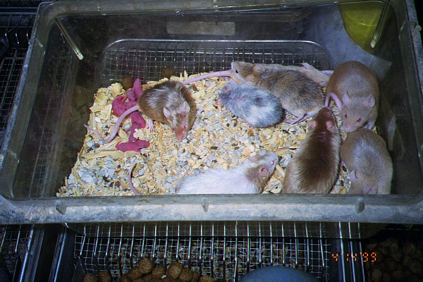
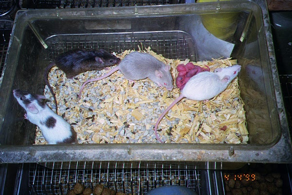
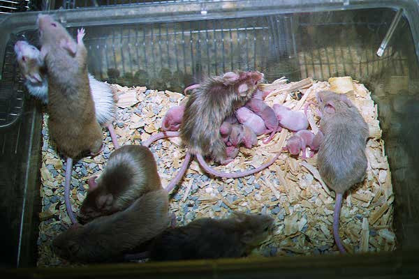
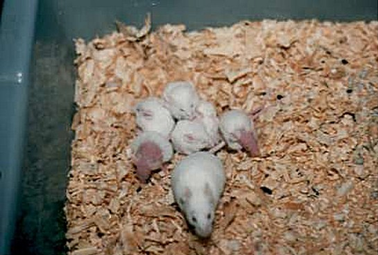
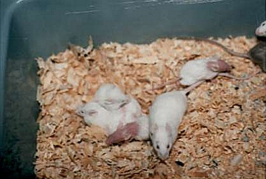
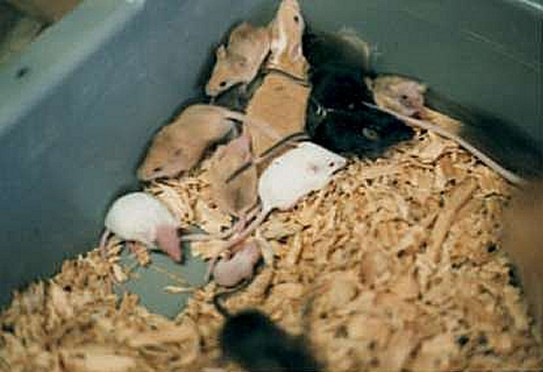

My Mice :D
Both of those pictures were taken after they had babies.


New pictures :o)
babies had grown some :o)

hairless mice in their losing hair stage when they are growing.  

If mice have "hairless" genes. they would lose their hair when they are growing up.
